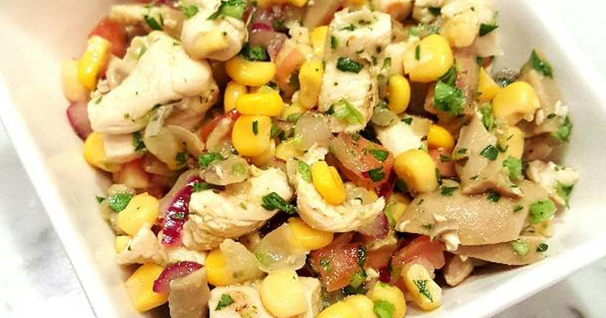
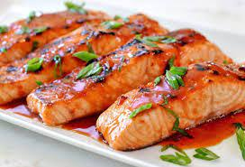

2. Sazonar las pechugas de pollo con aceite de oliva, sal, pimienta y jugo de limón.
3. Colocar las pechugas en la parrilla y cocinar durante 6-8 minutos por cada lado, o hasta que estén
doradas y cocidas por completo.
Comentarios
Ensalada Pollo a la parrilla

Ingredientes:
2 pechugas de pollo
2 cucharadas de aceite de oliva
Sal y pimienta al gusto
1 lechuga
1/2 taza de tomates cherry
1/2 taza de maíz
1/4 taza de queso feta
Preparación:
1. Precalentar la parrilla a fuego medio-alto.
2. Sazonar las pechugas de pollo con aceite de oliva, sal y pimienta.
3. Colocar las pechugas en la parrilla y cocinar durante 6-8 minutos por cada lado, o hasta que estén
doradas y cocidas por completo.
4. Cortar el pollo en tiras.
5. Lavar y picar la lechuga.
6. Mezclar la lechuga, los tomates, el maíz y el queso feta en un tazón grande.
7. Agregar las tiras de pollo a la ensalada y mezclar bien.
Comentarios
Salmon a la parrilla

Ingredientes:
4 filetes de salmón
2 cucharadas de aceite de oliva
Sal y pimienta al gusto
Jugo de limón al gusto
Preparación:
1. Precalentar la parrilla a fuego medio-alto.
2. Sazonar los filetes de salmón con aceite de oliva, sal, pimienta y jugo de limón.
3. Colocar los filetes en la parrilla y cocinar durante 5-7 minutos por cada lado, o hasta que estén
cocidos por completo.
4. Servir caliente con una guarnición de ensalada o verduras asadas.
Comentarios
Hambuerguesa de carne a la parrilla
Ingredientes:
1 libra de carne molida
1/4 taza de cebolla picada
1 cucharada de mostaza
1 cucharada de salsa Worcestershire
1 huevo
Sal y pimienta al gusto
4 panes para hamburguesa
Lechuga, tomate y queso para la guarnición
Preparación:
1. En un tazón grande, mezclar la carne molida, lacebolla picada, la mostaza, la salsa Worcestershire,
el huevo, la sal y la pimienta hasta que estén bien combinados.
2. Dividir la mezcla de carne en cuatro partes iguales y formar cuatro hamburguesas del mismo tamaño.
3. Precalentar la parrilla a fuego medio-alto.
4. Colocar las hamburguesas en la parrilla y cocinar durante 4-5 minutos por cada lado, o hasta que
estén cocidas por completo.
5. Mientras tanto, tostar los panes para hamburguesa en la parrilla.
6. Servir las hamburguesas en los panes tostados y agregar lechuga, tomate y queso al gusto.